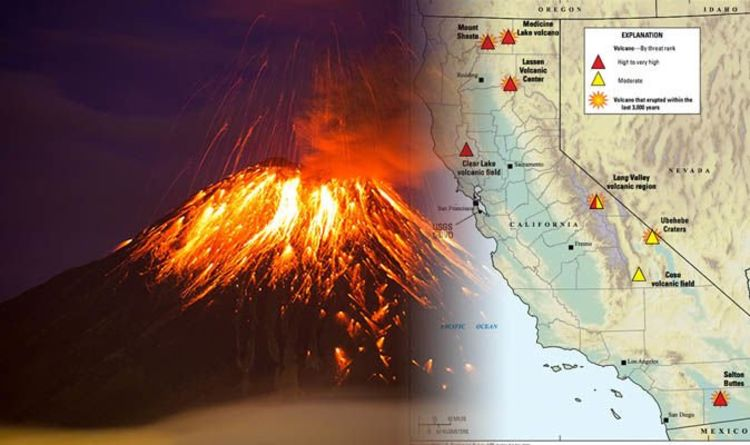

Teaching
California State University, Long Beach

Teaching Assistant
GEOL 110 · Natural Disasters
Laboratory analysis of geological data and field observations of geologic features associated with natural disasters, including earthquakes, volcanoes, landslides, floods, and coastal processes.
Fall 2022 · Spring 2023

Teaching Assistant
GEOL 160L · Introduction to Oceanography
Field and laboratory study of the marine environment. Analysis of maps, and shore and on-water field trips for experience in use of oceanographic instruments and interpretation of results.
Spring 2023